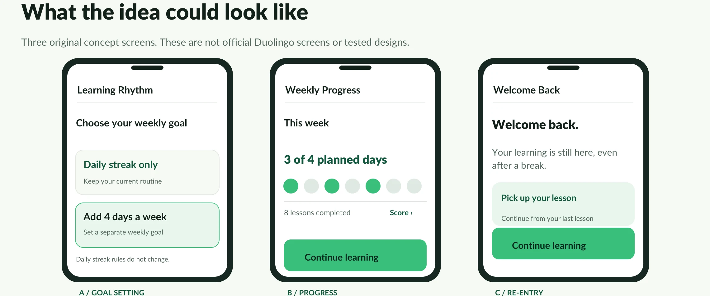

Could regular learning feel less rigid?
Daily streaks are easy to understand. You practise, the count increases and a routine starts to form. Duolingo has described how it uses streaks and habit research to encourage learners to return. Its product also includes tools such as Streak Freezes and Friend Streaks.
That is a useful starting point, but it raises a different question. Does a daily goal suit people who want to practise a few times each week, or could it sometimes make progress feel harder to maintain?
How might Duolingo support regular learning while giving people more choice about when they practise?
This question is an exploration, not a conclusion that Duolingo has a confirmed usability problem.
What I could learn without recruiting anyone
The project draws on publicly available product information, motivation research, usability guidance and a small number of public learner discussions. Those sources answer different questions, so they should not be treated as equally strong evidence.
Published product information
Duolingo describes how its streaks are meant to support habits. It also provides ways to protect a streak or change reminders. These are documented product features, not my own usability-test findings.
Psychology and usability
Research on autonomous motivation gives a reason to investigate choice and control. Usability principles also suggest looking at visibility, expectations and recovery after mistakes.
Public user experiences
One public post described streaks as motivating. Another described relief after losing a long streak. These examples highlight possible differences, not how most learners feel.
What remains unknown
I did not observe people using the live app, conduct interviews or complete usability tests. That means I cannot claim there is a widespread problem or that my idea solves it.
An important product detail: Duolingo users reported a weekly lesson-goal experiment in 2024. The concept below therefore isn't presented as the first weekly-goal idea. It focuses on choosing practice days rather than completing a fixed number of lessons.
A hypothesis worth testing
Some learners may want a regular routine without needing to practise every day. A separate weekly practice goal might make it easier for them to see progress in a way that matches their schedule.
That is a design hypothesis. Before building anything, I would want to understand who might benefit, what they currently do after missing a day and whether the new goal would introduce confusion.
- Choice: let people opt into a weekly practice-days goal.
- Clarity: keep it separate from the existing daily streak, with clear rules.
- Meaningful progress: show learning activity alongside the streak.
- Return after a break: make it straightforward to continue learning without guilt-heavy language.
My Learning Rhythm
The proposed feature is called My Learning Rhythm. It offers an optional weekly practice-days goal alongside Duolingo's existing daily streak. Selecting the weekly option would not protect a daily streak and the interface would need to say that clearly.

I would also keep a simpler alternative on the table: improving progress feedback without adding a new goal. The research should determine whether another setting is needed at all.
How I would test the idea
First, 8 semi-structured interviews. I would recruit people with different streak experiences, including those who like daily streaks, those who have lost them and those who prefer less frequent practice. I'd ask about their goals, routines, missed days and what progress means to them.
Then, 6 to 8 moderated usability sessions. Participants would try a clickable prototype and complete tasks such as choosing a weekly goal, explaining how it affects their daily streak and finding where to resume after a break.
I'd pay particular attention to misunderstandings about the two goals, whether the experience feels supportive and whether participants can complete the key tasks without prompting. Small moderated sessions would help identify problems with the concept, not estimate population-wide preferences.
A longer-term product experiment could eventually examine whether learners actually return and practise meaningfully over several weeks. That would require Duolingo's involvement, product data and appropriate consent.
Test the need before committing to the feature
The next step I would recommend is exploratory research with learners, followed by a simple prototype comparison. The proposed weekly goal may help some people, but it might also add another rule to understand. A better progress summary could turn out to be enough.
The useful outcome of this project is a focused research question, a clearly documented hypothesis, a concept to discuss and a plan to gather better evidence. It is not a validated product improvement.
Prefer the full research materials?
The two PDFs include the presentation, study rationale, proposed interview questions, testing tasks and a more detailed analysis plan.
References and transparency
These are selected sources used to frame the question. The full 12-source list is in the portfolio PDF.
- Duolingo: How the streak uses habit research
- Duolingo Help Centre: What is a streak?
- Duolingo: Friend Streak
- Nielsen Norman Group: 10 usability heuristics
- Alamer et al.: Self-determination theory and language learning meta-analysis
- Public discussion of a weekly lesson goal trial, July 2024
Scope: Independent portfolio exercise prepared with drafting and layout assistance. No association with Duolingo, no live-app usability evaluation and no original participant data. All hypotheses require validation. Last prepared 19 November 2026.